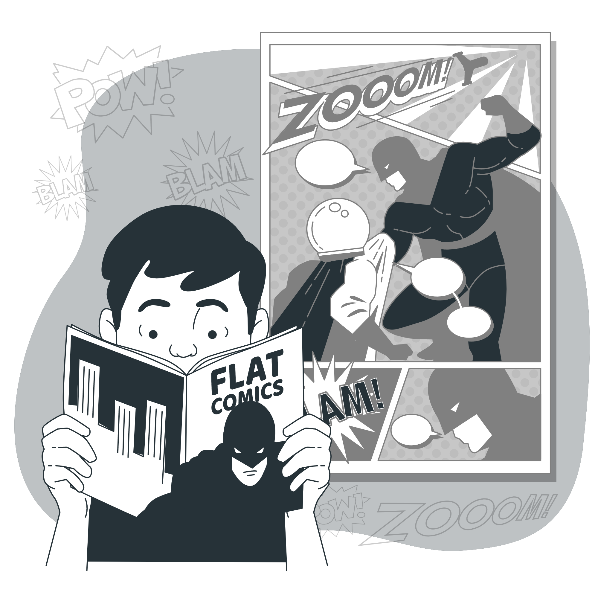

Apresente (e explique brevemente) todos os códigos de
status numéricos, com as respectivas descrições, que
podem ser retornados em uma resposta HTTP/1.1.
2. O Chrome DevTools (ou “Ferramentas do Desenvolvedor”) é
um conjunto de ferramentas de autoria e depuração
nativamente incorporado ao navegador Chrome. Consulte a
documentação do Chrome DevTools (link abaixo) e
apresente uma descrição de todos os painéis disponíveis
pela ferramenta.
https://developers.google.com/web/tools/chrome-devtools/ 2SI401
– Programação para a Web
3. Com o auxílio das Chrome DevTools, acesse o endereço
http://www.ft.unicamp.br e responda:
Atividade 2
Crie um conjunto de documentos HTML que represente uma
versão preliminar de um site para a disciplina SI401:
Busque representar no site todos os principais aspectos da disciplina:
ementa, objetivos, tópicos que serão tratados, referências, critérios de
avaliação, etc.
Inclua imagens, referências a materiais externos e o que mais achar
necessário.
Defina um layout, que estruture a página de forma que ela tenha vários
campos (ou regiões) com informações distintas, e implemente este
layout usando elementos semânticos de HTML.
Adicione formatação aos elementos contidos neste site usando CSS, com
folhas de estilo prioritariamente externas.
Siga o formato HTML mais recente e valide todos os documentos gerados
(HTML e CSS) nos sites do W3C
Atividade 3

Desenvolva e implemente um site que contenha um script
(em JavaScript) que permita que dois usuários disputem
partidas de Jogo da Velha.
• Ao ser carregada, a página deve solicitar o nome de cada usuário;
• Na sequência, a página deve ajustar o tabuleiro para o início de
um novo jogo, indicando de quem é a vez (pelo nome);
• Sempre que um jogador (X ou O) vencer ou ocorrer um empate,
uma mensagem adequada deve ser disparada.
• O documento HTML deve seguir a versão mais recente do padrão.
Atividade 4
Desenvolva e implemente um site que realize o cadastro de múltiplos
alunos em uma “base de dados” em PHP. Para isto, o site deve ter
duas páginas.
Uma conterá um formulário onde cada aluno preencherá seus dados e clicará
em “cadastrar”. Quando “cadastrar” for clicado, o aluno será inserido na base
de dados (pode ser um array em PHP ou outra estrutura de dados).
O formulário deve ter os campos: nome, RA, sexo, idade, endereço, telefone e email;
A segunda página deverá exibir todas as entradas da base ordenadas (por
RA).
Deverá haver um menu, à esquerda da página, que permita que o usuário
navegue pelas duas páginas.
Todos os documentos gerados devem seguir o padrão mais recente de HTML
(valide-os no site do W3C).